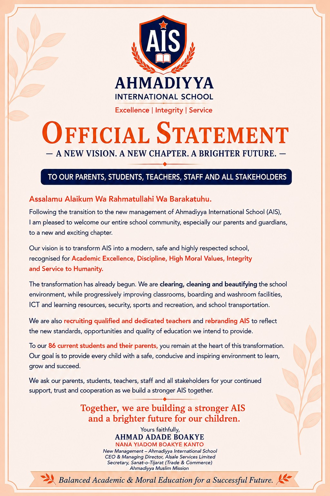

Following the transition to new management, AIS has shared an official statement welcoming parents, students, teachers, staff and stakeholders to a new chapter for the school.
A vision for transformation
The statement describes a vision to transform AIS into a modern, safe and highly respected school recognised for Academic Excellence, Discipline, High Moral Values, Integrity and Service to Humanity.
It states that the transformation has already begun, with work focused on clearing, cleaning and beautifying the school environment while progressively improving classrooms, boarding and washroom facilities, ICT and learning resources, security, sports and recreation, and school transportation.
People and learning at the centre
The new management also says it is recruiting qualified and dedicated teachers and rebranding AIS to reflect the new standards, opportunities and quality of education it intends to provide.
The statement highlights the school's 86 current students and their parents as being at the heart of the transformation, with a goal of providing every child with a safe, conducive and inspiring environment to learn, grow and succeed.
Building together
Parents, students, teachers, staff and stakeholders are asked for their continued support, trust and cooperation as the school community works towards a stronger AIS and a brighter future for its children.